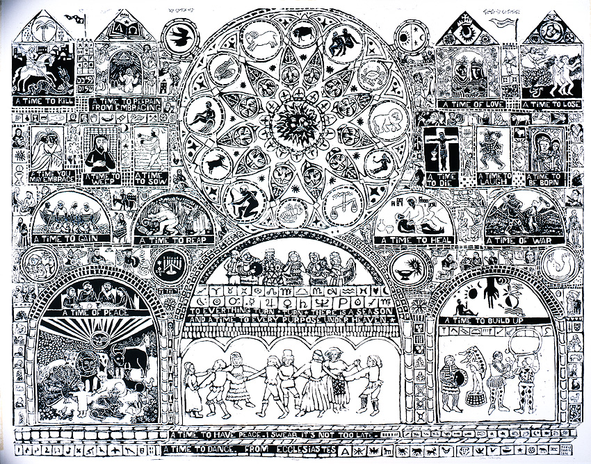

Ecclesiastes 3:4
a time to weep, and a time to laugh; a time to mourn, and a time to dance;

John August Swanson, Ecclesiastes, One Color Serigraph, 1969
John August Swanson first created Ecclesiastes in the 1960s, inspired by a reading from John F Kennedy’s funeral, and Pete Seeger’s song, “Turn, Turn, Turn.” He revisited the artwork throughout his life.
For everything there is a season, and a time for every matter under heaven:
2 a time to be born, and a time to die; a time to plant, and a time to pluck up what is planted;
3 a time to kill, and a time to heal; a time to break down, and a time to build up;
4 a time to weep, and a time to laugh; a time to mourn, and a time to dance;
5 a time to cast away stones, and a time to gather stones together; a time to embrace, and a time to refrain from embracing;
6 a time to seek, and a time to lose; a time to keep, and a time to cast away;
7 a time to tear, and a time to sew; a time to keep silence, and a time to speak;
8 a time to love, and a time to hate; a time for war, and a time for peace.